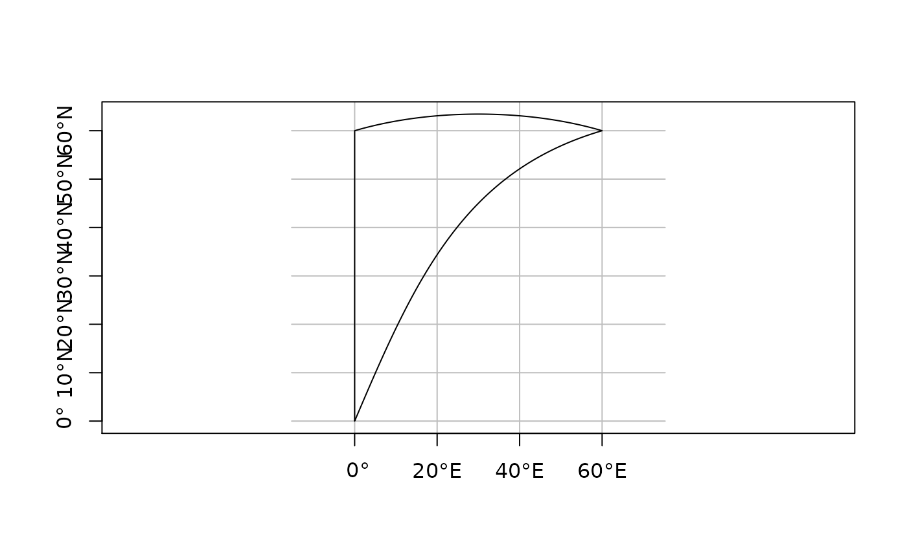

liblwgeom geodetic functions for length, area, segmentizing, covers
Usage
st_geod_area(x)
st_geod_length(x)
st_geod_segmentize(x, max_seg_length)
st_geod_covers(x, y, sparse = TRUE)
st_geod_covered_by(x, y, sparse = TRUE)
st_geod_distance(x, y, tolerance = 0, sparse = FALSE)Arguments
- x
object of class
sf,sfcorsfg- max_seg_length
segment length in degree, radians, or as a length unit (e.g., m)
- y
object of class
sf,sfcorsfg- sparse
logical; if
TRUE, return a sparse matrix (object of classsgbp), otherwise, return a dense logical matrix.- tolerance
double or length
unitsvalue: if positive, the first distance less thantoleranceis returned, rather than the true distance
Details
st_area will give an error message when the area spans the equator and lwgeom is linked to a proj.4 version older than 4.9.0 (see lwgeom_extSoftVersion)
longitude coordinates returned are rescaled to [-180,180)
Note
this function should is used by st_distance, do not use it directly
Examples
library(sf)
nc = st_read(system.file("gpkg/nc.gpkg", package="sf"))
#> Reading layer `nc.gpkg' from data source
#> `/home/runner/work/_temp/Library/sf/gpkg/nc.gpkg' using driver `GPKG'
#> Simple feature collection with 100 features and 14 fields
#> Geometry type: MULTIPOLYGON
#> Dimension: XY
#> Bounding box: xmin: -84.32385 ymin: 33.88199 xmax: -75.45698 ymax: 36.58965
#> Geodetic CRS: NAD27
st_geod_area(nc[1:3,])
#> Units: [m^2]
#> [1] 1137388604 611077263 1423489919
# st_area(nc[1:3,])
l = st_sfc(st_linestring(rbind(c(7,52), c(8,53))), crs = 4326)
st_geod_length(l)
#> 130359.3 [m]
library(units)
#> udunits database from /usr/share/xml/udunits/udunits2.xml
pol = st_polygon(list(rbind(c(0,0), c(0,60), c(60,60), c(0,0))))
x = st_sfc(pol, crs = 4326)
seg = st_geod_segmentize(x[1], set_units(10, km))
plot(seg, graticule = TRUE, axes = TRUE)

pole = st_polygon(list(rbind(c(0,80), c(120,80), c(240,80), c(0,80))))
pt = st_point(c(0,90))
x = st_sfc(pole, pt, crs = 4326)
st_geod_covers(x[c(1,1,1)], x[c(2,2,2,2)])
#> Sparse geometry binary predicate list of length 3, where the predicate
#> was `covers'
#> 1: 1, 2, 3, 4
#> 2: 1, 2, 3, 4
#> 3: 1, 2, 3, 4
pole = st_polygon(list(rbind(c(0,80), c(120,80), c(240,80), c(0,80))))
pt = st_point(c(30,70))
x = st_sfc(pole, pt, crs = 4326)
st_geod_distance(x, x)
#> Units: [m]
#> [,1] [,2]
#> [1,] 0 1378923
#> [2,] 1378923 0